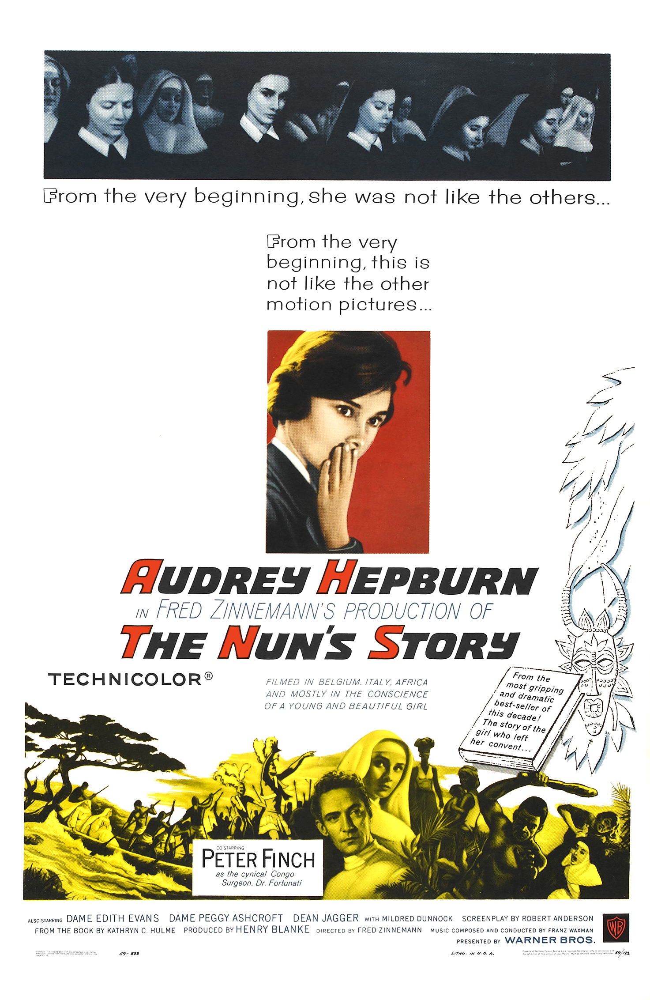

The Nun's Story
32nd Academy Awards
(Oscars 1960)
8 Nominations, 0 Awards
| Nominations | ||
|---|---|---|
| Category | Nominees | Result |
| Best Motion Picture | Henry Blanke | Nominated |
| Actress | Audrey Hepburn | Nominated |
| Directing | Fred Zinnemann | Nominated |
| Writing (Screenplay--based on material from another medium) | Robert Anderson | Nominated |
| Cinematography (Color) | Franz Planer | Nominated |
| Film Editing | Walter Thompson | Nominated |
| Sound | George R. Groves | Nominated |
| Music (Music Score of a Dramatic or Comedy Picture) | Franz Waxman | Nominated |